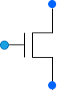
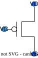
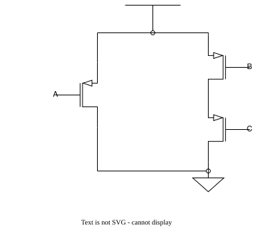
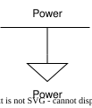
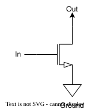
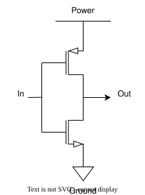
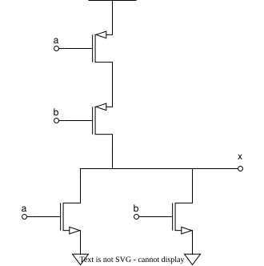

Transistors
w1d1
Logistics
Announcements
- Welcome to HW/
asm - Action Items discussion
Transistors
Physical Building Block
- A transistor is a physical device to turn continuous electrical behavior into digital
0s and1s. - An electronically controlled switch turns current on or off
They’re Popular

Transistors
- We will be working with two types of transistors
- nMOS transistors
- pMOS transistors
- There are three terminals
- Gate: controls whether the transistor is on or off
- Source and Drain: endpoints
Transistor Symbol
|
 |
|
| Switch | Transistor |
NMOS Transistor
- \(V_D\) in red is the drain, or the output.
- \(V_S\) in red is the source, an input, but in practice mostly useful to determine if…
- \(V_G\) in blue is the gate, controls whether the transistor is on or off
NMOS Transistor
- If the gate voltage is high (logic 1), current can flow between source (bottom) and drain (top)
- Source and drain have same voltage.
- Denote as \(V_S = V_D\)
NMOS Transistor
- If the gate voltage is low (logic 0), current can’t flow between source (bottom) and drain (top)
- Drain has ambigious voltage.
Closing Puzzle
Determine \(V_D\) for the following cases.
| \(V_S\) | \(V_G\) | \(V_D\) |
|---|---|---|
| 0 | 1 | 0 |
| 1 | 1 | 1 |
| 0 | 0 | ? |
| 1 | 0 | ? |
PMOS Transistor
- \(V_D\) in red is the drain, or the output.
- \(V_S\) in red is the source, an input, but in practice mostly useful to determine if…
- \(V_G\) in blue is the gate, controls whether the transistor is on or off

PMOS Transistor
- If the gate voltage is low (logic 0), current can flow between source (bottom) and drain (top)
- Source and drain have same voltage.
- Denote as \(V_S = V_D\)
vs
NMOS
- If the gate voltage is high (logic 1), current can flow between source (bottom) and drain (top)
PMOS
- If the gate voltage is low (logic 0), current can flow between source (bottom) and drain (top)
Truth Table
NMOS
| \(V_S\) | \(V_G\) | \(V_D\) |
|---|---|---|
| 0 | 1 | 0 |
| 1 | 1 | 1 |
| 0 | 0 | ? |
| 1 | 0 | ? |
PMOS
| \(V_S\) | \(V_G\) | \(V_D\) |
|---|---|---|
| 0 | 1 | ? |
| 1 | 1 | ? |
| 0 | 0 | 0 |
| 1 | 0 | 1 |
Logic
Abstraction
CMOS gates abstract away CMOS gates are the individual transistors, letting abstraction that lets many us design reliable logic at a transistors behave like a higher level. single logical unit.
Abstraction
CMOS gates are the abstraction that lets many transistors behave like a single logical unit.
NMOS
PMOS
Draw Style
- We adopt the drawing conventions of “draw.io”
- Don’t short circuit: use draw.io for your electrical diagrams

Example

Let’s Design!
- How to design a circuit that
- takes as an input a one-bit value and
- outputs the complement of that number.
- This is the inverter.
| \(V_{in}\) | \(V_{out}\) |
|---|---|
| 0 | 1 |
| 1 | 0 |
New Components
- We introduce
- Power – a component that produces a logic high value
- Horizontal bar, with a vertical power downward from the middle.
- Ground
- a component that produces a logic low value
- Triangle pointing downward.
- Power – a component that produces a logic high value
New Components
- (This would blow up)

Recall
- We have two gate types…
NMOS
| \(V_S\) | \(V_G\) | \(V_D\) |
|---|---|---|
| 0 | 1 | 0 |
| 1 | 1 | 1 |
| 0 | 0 | ? |
| 1 | 0 | ? |
PMOS
| \(V_S\) | \(V_G\) | \(V_D\) |
|---|---|---|
| 0 | 1 | ? |
| 1 | 1 | ? |
| 0 | 0 | 0 |
| 1 | 0 | 1 |
Gate to Power
- If we connect a gate to power, we can conditionally transmit “logic high”.
- Using a NMOS gate, we can transmit only if we have “logic low” on our gate.
- \(V_S = 1 \land V_G = 0 \implies V_D = 1\)
Gate to Power
- If we connect a gate to ground, we can conditionally transmit “logic low”.
- Using a PMOS gate, we can transmit only if we have “logic high” on our gate.
- \(V_S = 0 \land V_G = 1 \implies V_D = 0\)

By Our Powers Combined
- Direct input to both a PMOS and NMOS
- One will always transmit.
- Therefore always transmitting 0 (ground) or 1 (power)
- And always inverting!

CMOS Gates
- CMOS = Complementary MOS
- The PMOS and NMOS transistors complement each other to form the logic gate
- CMOS is not a type of transistor!
- It is a technology that combines both NMOS and PMOS
- You might also see MOSFET: Metal Oxide Semiconductor Field-Effect Transistor
Pull-up and Pull-down Networks
- Only one network will be on at a time
- The pull-up network drives the output when the output is 1.
- The pull-down network drives the output when the output is 0.
- Output, not input, relevant.
- We’re “closing all the switches” to either power or ground.
CMOS Inverter
- The pull-up network drives the output when the output is 1. - PMOS “closes the switch” when low. - Which connects power to out.
- The pull-down network drives the output when the output is 0. - NMOS “closes the switch” when high. - Which connects ground to out.
General CMOS Gate Recipe
- Figure out pulldown network that does what you want (e.g., what gives
0) - Build the “opposite” version of that network for “pull up”
- Combine the two, splitting inputs across them.
- Generally, invert a network by swaping series/parallel and swapping PMOS/NMOS.
What does this compute?
- For power in draw.io, use “Vdd”, read more

Exercise
- Create XNOR
| \(A\) | \(B\) | \(A == B\) |
|---|---|---|
| 0 | 0 | 1 |
| 0 | 1 | 0 |
| 1 | 0 | 0 |
| 1 | 1 | 1 |